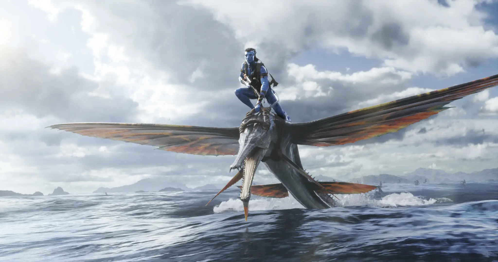

Sinopse
Uma década após os eventos do primeiro filme, Avatar 2: O Caminho da Água acompanha a história da família Sully: Jake (Sam Worthington), Neytiri (Zoe Saldana) e seus filhos. O longa também irá apresentar os perigos que os esperam nesta nova aventura, os esforços que fazem para se manterem seguros, as batalhas que enfrentam para sobreviver e, claro, as tragédias que sofrem.
O novo filme da 20th Century Studios estreia no dia 15 de dezembro de 2022 nos cinemas brasileiros.